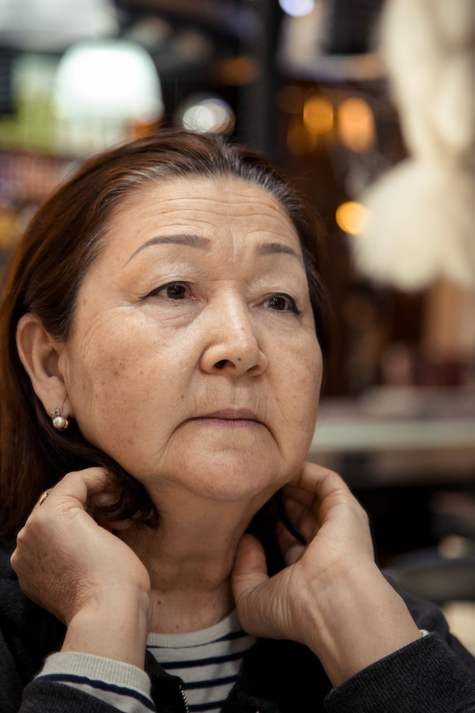
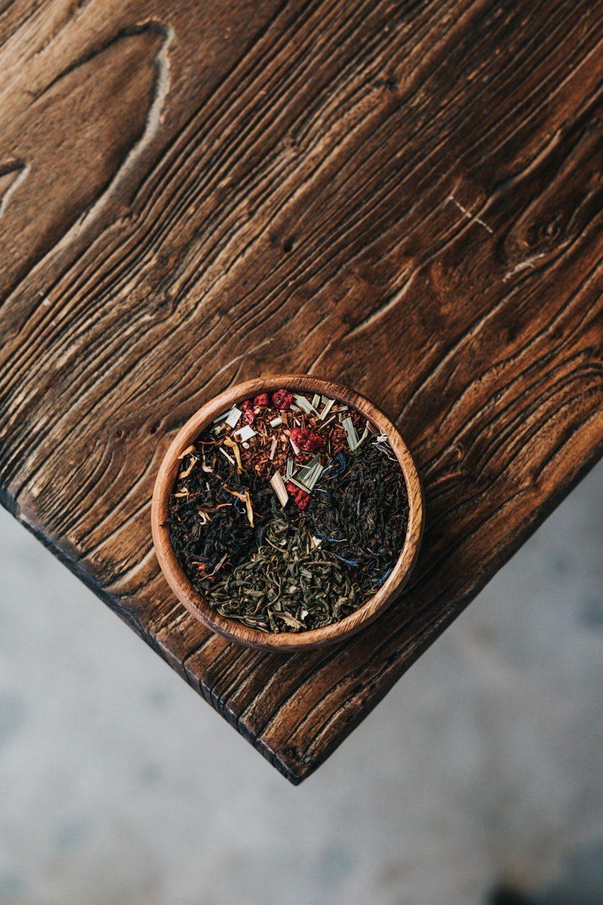

备孕 bèi yùn
Trying to conceiveFertility support
Support alongside IVF and IUI, or while you are trying naturally — circulation,
cycle regularity, sleep, and the strain the waiting itself puts on a body.

调经 tiáo jīng
Cycles and uterine careMenstrual health
Period pain, irregular or absent cycles, and the uterine circulation sitting
underneath both.

产后调理 chǎn hòu
Pregnancy and postpartumRecovery
Physiotherapy through pregnancy, and the long recovery after — pelvic floor,
back and shoulders, sleep, and rebuilding what was borrowed.

更年期 gēng nián qī
MenopauseAnd the years around it
Hot flushes, broken sleep, low mood and aching joints. Care for the whole
passage, not only its worst weeks.

筋骨 jīn gǔ
Pain and injuryPhysiotherapy
Necks, shoulders and lower backs that loosen for a day and tighten again.
Sports injuries, sprains and strains that have stalled.

中药 zhōng yào
Herbal medicineTaiwan-sourced
Formulas for cycles, fertility support and postpartum recovery, built from raw
herbs and adjusted as your case changes.